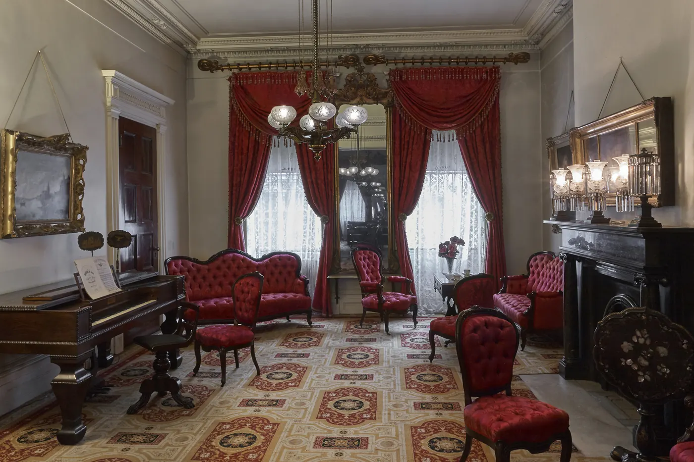
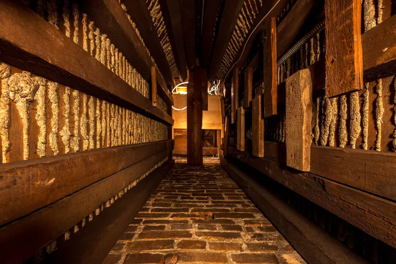

A New York family home from 1832, with a secret passage in its walls.
The Tredwells lived here for almost 100 years with their Irish servants. Their furniture and belongings still fill the rooms, and the passage built to shelter freedom-seekers is on view.
Open during restoration. Enter through Manuel Plaza, 35 East 4th Street. Wednesday to Sunday, 1 to 5 p.m.

Floor by floor, and the shaft between them
In 1832 Joseph Brewster built a narrow passageway into this house, beneath a built-in chest of drawers. It drops 15 feet, from the bedroom floor to the ground-floor pantry. Follow it down.
Fourth floor
The servants’ quarters. The 1855 census names four women: Ann Clark, Bridget Murphy, Mary James and Mary Smith.
Third floor
Bedroom floor
The passage starts here, about 2 feet square, under a built-in chest of drawers.
Parlor floor
The Greek Revival double parlor, in a house considered one of the finest surviving examples of architecture from the period.
The only known intact Underground Railroad site open to the public in Manhattan.

Years of research showed that Joseph Brewster, an abolitionist, designed the house with a passageway that serves no known domestic purpose. No other 1830s houses have one like it.
New York State abolished slavery in 1827, but the city’s economy stayed deeply entangled with the slave South. Anti-slavery work was dangerous, and safe houses operated in secret.
Read about the discovery- 1832The year Brewster built the house, with the passage in it.
- 2 ftRoughly the width of the shaft, square.
- 15 ftHow far it descends, from the bedroom floor to the ground floor.
- 1840The date of the only other intact shelter point left in Manhattan, the Hopper-Gibbons House, which is not open to the public.
Coming up at the house
Reservations are strongly recommended. Tickets for in-person events are emailed to you.
All eventsWalking tour: the Tredwells’ world of 19th-century NoHo
90 minutes through the family’s elite neighborhood. Meets next door in Manuel Plaza. $20, free for members.
In the footsteps of Bridget Murphy
A “back-stairs” house tour, from the ground-floor kitchen to the fourth-floor servants’ quarters. $20.
A Christmas Carol at the Merchant’s House
Charles Dickens’ own script, performed by candlelight in the double parlor. 70 minutes. Tickets $50 to $130.
Visit
29 East Fourth Street, between Lafayette Street and Bowery. While the house is under restoration, the way in is through Manuel Plaza, at 35 East 4th Street.
Wednesday to Sunday
| Guided house tour, 12 p.m. 60 to 75 minutes, reservations recommended | $20.50 |
|---|---|
| Self-guided visit, 1 to 5 p.m. Last entry 4:30, tickets at the door | $15.50 |
| Seniors (over 65) and students, self-guided | $10.50 |
| Children under 12, and members | Free |